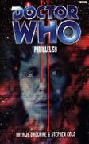

|
Parallel 59
|
BASIC PLOT DOCTOR COMPANIONS MATERIALISATION CIRCUIT Pg 279 On Skale. PREPARATORY READING CONTINUITY REFERENCES "The ghost of that tan that he'd picked up on Drebnar was still vaguely in evidence." Frontier Worlds, and although it wasn't mentioned in that book, it is true that on Drebnar it only rained at night. But then Fitz spent most of his time in the basement of an office, so presumably he spent some time in Drebnarian salons. Pg 18 "As when he'd stayed in China" Revolution Man. Pg 23 "Compassion nodded briefly and winced as the Doctor began calling out inane requests for glasses of lemonade and ginger beer." The Android Invasion. Pg 26 "'Compassion. That's a code name?' Jessen asked. Compassion smiled and swept her hair back from her eyes. 'A man called Kode first called me by it, yes.'" Interference part I. Pg 30 "Instead of ignoring them like they were rubbish blowing along the pavement, the way I used to back in London." Possibly before The Taint and during the two years' absence in Revolution Man. Before Fitz was made a member of the Red Army, obviously. Pg 31 "I can cast my mind back to going to San Francisco, or to the UN building." Unnatural History, Interference part I. "I know it's all to do with the way the TARDIS pieced my mind back together again after... well, after what happened when I got caught up with the Remote." Interference part II. Pg 39 "The Doctor scrabbled forward into the dense smoke. 'Compassion!' he bellowed." And you pretty much expect him to follow it with 'If... she's... dead...' in a moment reminiscent of Battlefield. Pg 41 Similarly, having jump-kicked an armoured guard through a broken window, the Doctor's "Well, you should be all right then, shouldn't you?" in reference to the fact that he was indeed armoured has us thinking of Vengeance on Varos. Pg 42 'Hiccuping on my triple-helixes." We've known about the Doctor's chromosomal make-up since Interference part II. "'Is that right?' the Doctor whispered. 'For your skin to be so pale, I mean? Porcelain. Perfect.'" Compassion's perfect skin is all part of the prefigurement of her transformation into a TARDIS in The Shadows of Avalon. Pg 59 "'The time for fooling is over,' said the Doctor in a spooky monotone, trying not to blink." It's just possible that this is a reference to the moment at the end of The Caves of Androzani when Colin Baker failed in the not blinking stakes in the single chance they had at the take of his very first scene in the role. Pg 65 "Up the revolution, thought Fitz." This brief moment of having four people in a room declaiming that they're going to do amazing things has me thinking of the launch of the Fourth Reich in Silver Nemesis, and it's relevant to note that this revolution has just about as much success. Or maybe there just aren't that many blatant continuity references in this story. Which comes as something of a relief. Pg 75 "Sam once told me the Doctor traipsed halfway around the universe looking for her." The Sam is Missing arc: Longest Day through Seeing I. "I've horseridden over the mountains with Barbarella. Conquered the Antarctic millions of years before any man set foot there. Become an undercover agent in exotic lands." In order: The Blue Angel (probably), The Taking of Planet 5 and Frontier Worlds. "No ties, no tears... most of the time, anyway." The 'tears' may be a reference to Fitz's relationship with Alura in Frontier Worlds. Pg 81 "The Doctor was whistling a tune to himself in his cell to keep himself occupied. He wondered what it was for the moment, then remembered it was one of Fitz's compositions. A simple, plaintive little melody he'd written for Sam to practice on the guitar, what seemed like an age ago." This is very likely the tune that the Doctor is trying to recapture in The Year of Intelligent Tigers. The fact that Fitz was teaching Sam the guitar was mentioned in Unnatural History. "He shuddered when he thought of what he'd let the boy go through with the Remote." Interference parts I and II. Pg 87 Fitz briefly thinks of his Mum, from The Taint. "Particularly after they'd been apart all that time in the 1960s." Revolution Man. "The Red Army had 'helped' him. The Remote had 'helped' him. Even the TARDIS had added her tuppence worth... He'd been taken, a lump of Fitz-flavoured dough, kneaded and pulled apart and refashioned time and again." Revolution Man, Interference part I, Interference part II. Pg 88 "The Benelisians had a go. Faction Paradox got well stuck in." The Taint, Interference part II. Pg 90 "He knew the type; there'd been a couple at Frontier Worlds." You will be less than shocked to know that this is a reference to Frontier Worlds. Pg 97 "'Of course it's possible,' the Doctor insisted. 'Little boxes in big boxes is easy, it's the other way round that's the tricky bit.'" Similar to how the Doctor explained dimensional transcendentalism to Leela in The Robots of Death. Pg 105 "I found myself wondering about Filippa. I feel a lot for her, more than I've felt for Maddy or Alura in my other lives." Revolution Man and Frontier Worlds. Pg 122 "And before Alura had died back on Drebnar." Frontier Worlds again. Pg 146 "I'm not my mother's son for nothing." The Taint. Pg 149 "When the TARDIS did to me what all the king's men and horses couldn't do." Interference part II. Pg 153 "'Not until you give me something more conclusive on your true origins.' 'Everyone seems to have their own opinion on that one,' the Doctor sighed. 'It's such a bore.'" Hmmm. The Telemovie, and probably Stephen Cole complaining about the fact that he as editor has had to deal with all the repercussions of the half-human thing. "It's not the sort of thing I'd brag about" unless I was appearing in the Telemovie. Pg 160 "It used to be the case that the signals were all that mattered back in the Remote." Interference part I. "she saw him more as a function" The Doctor as a function of the universe is an idea first mooted in Alien Bodies, or Transit, if you want to go further back and apply it just to Earth. Pgs 173-174 "He remembered Makkersvil commenting on evidence of cardiosurgery during the Doctor's scan." Left over from the Telemovie, and he'll get another, rather more drastic scar in the rather more drastic cardiosurgery of The Adventuress of Henrietta Street. Pg 174 "The Doctor's eyes snapped open to take in harsh blue lighting." This whole sequence is deliberately reminiscent of an almost identical scene - including the lighting - in the Telemovie. Confirmed by: "He hadn't been in a morgue since he lost his life in San Francisco." The Telemovie again. Pg 175 "He pinched his nose. 'WE-WILL-EXTERMINATE-ALL-OF SKAAAAAAAAAALE!' I'm sure I ought to recognize the alien race that the Doctor is impersonating, but, I'm afraid, their identity escapes me at this time. Pg 195 "Your technology is founded on flesh-tech", thus making it very similar to a later Cole EDA, To The Slaughter. Obviously flesh technology is a particular bugbear, as it were, of Mr. Cole's. This may be related to the Fleshsmiths, seen in Prime Time. Pg 215 "He hadn't tried anything like this for quite a while, but hopefully the knack hadn't escaped him." The 'knack' in question is the ability to use the sonic screwdriver to detect and explode mines, and the last time we saw him do it was in The Sea Devils. Pg 222 The mineships turn out to be "small and unimpressive. Each was around six metres in length" reminding us of similar space capsule back in The Ambassadors of Death. Pg 244 "Just like I left Alura. But no note this time." Frontier Worlds. Pg 252 "He made out gangrenous flesh thick with wires and hair, veins stitched into cables and bristling sensors spiking from the bulk like protruding nails." And a little like the controller of television centre in Bad Wolf. Pg 253 "The Doctor thumped the top of a monitor with his fist." Very State of Decay. Or Telemovie. Pg 257 "Remembered saying once, long ago, that he didn't work for anyone, he was just having fun." Nightmare of Eden. Pg 280 "The room's meant to 'promote natural healing' or some such rubbish, all green hills, blue skies and butterflies." Sounds like a Zero Room (Castrovalva) and, obviously, the Butterfly Room from Vampire Science. It's the first time it's been suggested that they might well be one and the same. OLD FRIENDS AND OLD ENEMIES NEW FRIENDS AND NEW ENEMIES Havdar, Rojin, Ammon, Slatin. Filippa Cian, who returns, albeit in flashback, in The Shadows of Avalon.
CONTINUITY COCK-UPS PLUGGING THE HOLES [Fan-wank theorizing of how to fix continuity cock-ups] FEATURED ALIEN RACES The Haltiel Presence. They're neither seen nor described, so we've no idea what they're like at all. We do know that Haltiel has a noxious atmosphere and high gravity, so we could assume that they look like Sontarans with breathing apparatus, but we'd probably be wrong. FEATURED LOCATIONS Parallel 59 on Skale, including The Facility, the Northern Waters and a couple of rebel bases in mine-shafts (and where else would one put a rebel base?) Mechta, but it doesn't really exist. Not that not existing stopped loads of authors using computer realities as places in the NAs, so we thought we'd mention it here. IN SUMMARY - Anthony Wilson |
|
 |